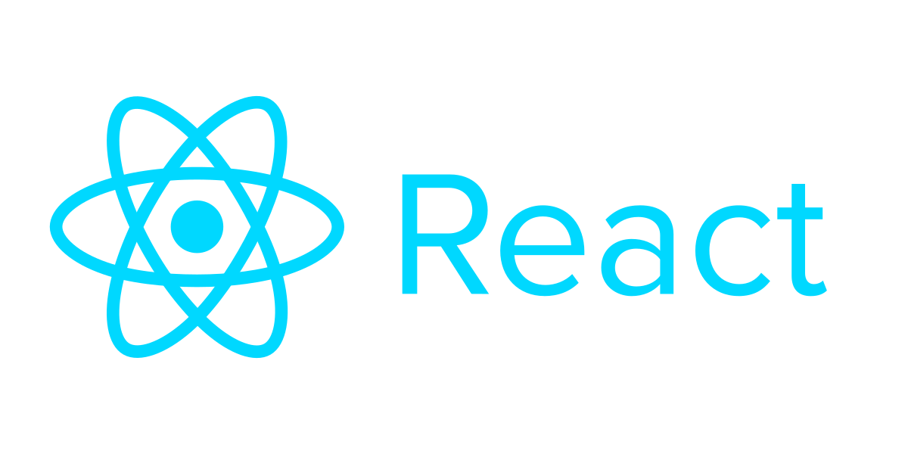
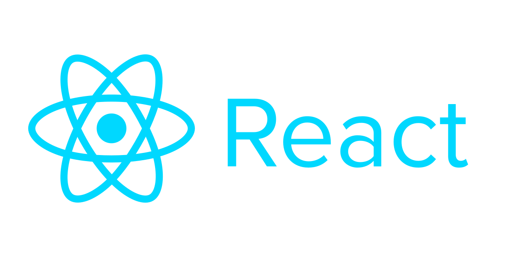

В Вебпрактик мы пишем сервисы для корпораций

Иван Поддубный, CTO Webpractik
Использовать подход документации как код, это значит применять к документации все те же правила, инструменты и процедуры, что и к программному коду, например:

docs(catalog): добавлено описание каталога
fix(catalog): исправлена ошибка
style(catalog): скорректировано оформление
refactor(catalog): обновлено описание

 ,
,  integration
integration Система контроля версий
Система контроля версий +

+

Ваши вопросы
Telegram: @northleshiy